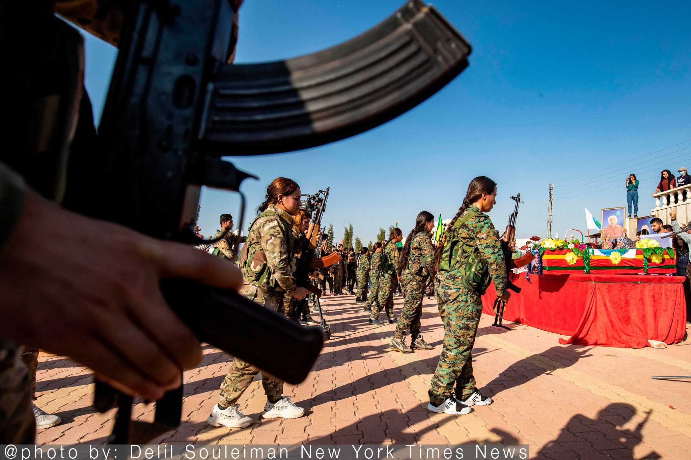
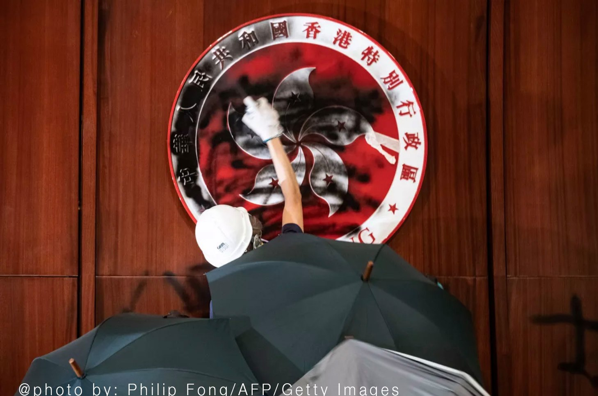

The Decline of the United States
Source: “Abandoned by US in Syria, Kurds Find New Ally in American Foe”, October 13th, 2019 by Ben Hubbard, New York Times
[Source]
For over five years, with support from the Syrian government, United States policy relied on the collaboration with Kurdish-led forces both to fight the Islamic State and limit the influence of Russia and Iran. The goal has always been trying to maintain leverage over any future settlement of conflicts. However, Kurds certainly felt betrayed early Monday, accelerating a withdrawal of more than 100 American forces from northern Syria that set the state for the Turkish invasion of Kurdish-controlled land. This sudden shift marks a major turning point in Syria’s long war. After Trump abruptly abandoned the approach to withdraw, the threat gave President of Syria and his Iranian and Russia backers a free hand. It jeopardized hard winning against Islamic State– open doors potentially for its return. The Kurd’s deal with Damascus paved the way for government forces “to return to the country’s northeast for the first time to repel a Turkish invasion launch after Trump administration pulled American troops out of the way” (2019, New York Times). As a result, this pullout has unleashed chaos. The announcement of the deal Sunday capped a development mark for rapid advances by Turkish backed forces and the escape of hundreds of women and children linked to the Islamic State from detention camps. The invasion ordered by Turnkey, after the green light of Trump, was aimed at uprooting the Syrian Democratic Forces, a Kurdish-led militia that’s been a key partner in the fight against the Islamic State. Turkish incursion killed numbers of lives and left Kurdish fighters accusing the US of betrayal.

The core focus since the 20th century is evidence that the United States is declining in its geopolitics, military, and economy. Similar in the lecture, the discussion on power after the cold war is apparent through the US withdrawing from international treaties, losing trust, allies, and this leads to greater problems of affecting long-term impacts, especially for the next president. This article demonstrates how Trump is the only person who can make the middle east more chaotic: Turkey invading, thousands of Kurds fleeing their homes, and ISIS escaping detention camps and regrouping. Certainly, rather the endless war of nation-building and regime change, the US mission is a powerful example of how a terrorist can be defeated without deploying thousands of troops. Although Trump justified his decision explaining this is a part of his larger plan to bring American troops back home to end wars, the withdrawal is so damaging and strategically short-sighted. The impact only justifies the decline and concretes the effect of distrust and conflict with US’ allies worldwide. On a greater scheme, whether through the middle east or global great power competition, America will discover the increasing difficulty to assemble a coalition to confront shared threats. This will mean allowing threats to develop and putting additional American service members in harm’s way to compensate for partners that cannot be assembled. Trump’s impulsive decision to abandon US partners will thus have a net effect of diminishing security for American people and more US troops eventually deploying abroad with the lack of help from allies. Indeed, technological advancements, mass destructions, and the ability of few terrorist attacks killing thousands– as painfully apparent on September 11th, 2001– threats are too numerous and resources are too limited to defeat individually without collaboration and partnership. While simultaneously addressing threats in the middle east and competing more effectively with China and Russia, it is in the best interest of the US to have allies to succeed. The withdrawal reinforces the narrative that America is an unreliable security partner, which assures others to not work with the US when they require help.
Consequences: Hong Kong Protest
China Plays Hardball Over Hong Kong Unrest”, October 15th, 2019 by Phillip Orchard, Geopolitical Future
[Source]
After Houston Rockets, General Manager Daryl Morey, expressed support for Hong Kong protests on Twitter, NBA found itself at the center of the feud between Beijing and Anti-government protesters in Hong Kong. Escalating from the tweet, although NBA tried to distance itself from Morey’s view to diffuse the situation, Chinese Basketball Association announced a suspension of cooperation with the league. CCTV Sports Channel immediately suspends current broadcasts arrangements of NBA, NBA merchandise was removed from shelves in stores, NBA advertisements disappeared, and most NBA official Chinese partners suspended ties with leagues. In addition, the tweet has led to Beijing reportedly forcing Apple to remove the Taiwanese flag emoji from iPhone keyboards and several other apps, in which Hong Kong protesters used to crowdsource police movements. Meanwhile, Blizzard Entertainment, a US gaming company, suspended a professional player for expressing support for Hong Kong protests, and the Marriott hotel company expressed firing an employee for “wrongfully liking” a tweet by a Tibetan independent group. Evidently, the risk of mass social unrest is the highest it’s been since 1989, where these “uneasy relationships with foreign corporations illustrate the trade-offs inherent to Beijing’s approach to managing the problem” (2019, Geopolitics Future).

While Asia is profoundly sensitive, China is entering a period of intense internal economic and political stress. We see that the initial protest resides from an extradition bill that advanced due to a murder case between Hong Kong and Taiwan. Since then, the protester has escalated bringing forward local strikes, violence and protests demanding government for numerous of additional changes to the legislation that has disconnected relationships between many cities and countries. In my opinion the fact that China was willing to draw a discrete line with foreign firms reflect the country’s staggering growth in power, yet also increasing fragility. Holding one of the world’s largest consumer market, China is leveraging its market power for wide range of strategic, economic, and political aims. Still, China can appear ham-fisted by pressuring outside institutions to carry out considerable harm to its reputation abroad for minimal gain. The question comes down to for what gain? Beijing could have simply ignored Morey’s tweet which was unlikely to have additional impact to the perception of them in the mainland. After all, Twitter is censored in China. Yet, the matter that Beijing explicitly calling curbs to free speech in the US magnifies spotlight on human rights issues in Hong Kong, sparking a national conversation in US about Chinese coercion. Though China has worthwhile reasons for drawing their concrete line with foreign firms, such moves invariably comes with costs. Firstly, China needs foreign investment and technology, more so now considering the trade and tech war and global slowdown, China’s structural slowdown, credit shortage and the growing awareness in foreign business circles of the difficulty and risks operating in China. Yet, increasing investors and foreign firms considering doing business with China a risk of stumbling unawares onto provoking nationalist prohibitions– where they want to stay away. To clarify, certainly China remains exceedingly attractive to most firms, but China’s reputation problem carries risks in several strategic and economic areas. One involves Hong Kong's status as a hub for international companies to seek business in China or the region and with the scrambling feud trickles companies leaving Hong Kong with an exodus of high-paying jobs. In addition, the concern demonstrates affect with China’s relation with remaining parts of the world where no matter the outcomes, the risks of long-term outflow of capital and loss of talents are the two key ingredients to its economic success.